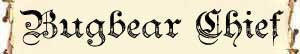

|
|
Ambiente/Habitat | Colline e Montagne |
| Frequenza | Non Comune | |
| Organizzazione | Tribale | |
| Periodo di Attività | Qualsiasi | |
| Dieta | Carnivoro | |
| Intelligenza | Average intelligence (8-10) | |
| Punti Combattimento | 8 Punti Combattimento | |
| Tesoro | Comune | |
| Allineamento Dominante | Caotico Malvagio | |
| Numero di Apparizione | 3d3 | |
| Classe Armatura | 5 corazza /10 naturale (-1 con scudo) | |
| Movimento | 6 esagoni | |
| Dadi Vita | 3 (+5 punti ferita) | |
| Thac0 | 17 | |
| Numero di Attacchi | Arma, 1 attacco al round | |
| Danni | Danno dell'arma, +2 dovuto alla forza | |
| Poteri Offensivi | Istinto Predatorio; | |
| Poteri Difensivi |
Robustezza
Superiore (+5 punti ferita); Morte Ritardata; |
|
| Poteri Generici | Nessuno | |
| Vulnerabilità | Nessuna | |
| Resistenza alla Magia | Nessuna | |
| Sensi |
Vista Comune, Infravisione (18 metri), Sensi Superiori |
|
| Dimensioni | Large (2,30 m. alti) | |
| Morale | Steady (12) | |
| Valore in Punti Esperienza | 180 |
| MODIFICATORI AI TIRI SALVEZZA | |||||||||||||||||||||||
| COR | 0 | 49 | ENV | +5 | 49 | MAG | 0 | 62 | MAL | +5 | 42 | MEN | 0 | 60 | RIF | 0 | 56 | ROB | +5 | 46 | VEL | 0 | 44 |
Descrizione
Questo umanoide muscoloso e brutale raggiunge i due metri e trenta di altezza. Una folta pelliccia copre la maggior parte del suo corpo. Dalla sua bocca spuntano zanne lunghe ed affilate, e il suo naso è molto simile a quello di un orso. Sono dotati di grandi padiglioni auricolari larghi ed appuntiti anch'essi ricoperti da folta peluria. Mentre le loro mani ricordano quelle degli altri umanoidi, i loro piedi sono simili a zampe di orso dotate di artigli.
Combat
I bugbear preferiscono tendere agguati ai loro avversari ogniqualvolta sia possibile. Quando sono a caccia, inviano esploratori in avanscoperta che, se avvistano una preda, tornano dal gruppo principale per fare rapporto e chiedere rinforzi. Gli attacchi dei bugbear sono coordinati e la loro tattica è piuttosto consolidata, seppur non eccellente. I bugbear utilizzano una varietà di armi, solitamente non estremamente raffinate ma tutte efficaci.
Per determinare
come sono armati tirare 1d12:
1-2) Scudo e Shoka: Iniziativa +7 Danni 2d4+2 (Metallo, Taglio)
3) Scudo e Carrikal: Iniziativa +6 Danni 1d6+3 (Metallo, Taglio)
4) Scudo e Morning Star: Iniziativa +7 Danni 1d8+2 (Metallo, Botta)
5-7) Scudo e Mace Axe: Iniziativa +6 Danni 1d8+2 (Metallo, Taglio)
8-9) Scudo e Flang Mace: Iniziativa +4 Danni 1d6+2 (Metallo, Taglio)
10-11) Great Mace: Iniziativa +8 Danni 1d8+3 (Metallo, Botta)
12) Two Handed Battle Axe: Iniziativa +9 Danni 1d10+2 (Metallo, Botta)
ISTINTO PREDATORIO (Moderate Special Ability): La creatura possiede un forte istinto predatorio, per tale motivo costei riceve un bonus costante di +1 ai suoi tiri per colpire.
ROBUSTEZZA SUPERIORE (Typical Ability): Il fisico della creatura è estremamente robusto. Ciò conferisce alla stessa una robustezza superiore che gli garantisce 5 punti ferita supplementari.
MORTE RITARDATA (Lesser Special Ability): Questa creatura è dotata di una forte forza di volontà. Per tale motivo, una volta raggiunto un valore di punti ferita pari od inferiore a 0 la stessa continuerà a combattere il resto del round e cadrà al suolo senza vita solo alla fine del round (come ultima azione possibile). Si noti che in questo periodo di tempo la creatura potrà anche essere regolarmente curata. Qualora, però, la creatura raggiunga un ammontare negativo di punti ferita pari od inferiore a -10 questa cadrà immediatamente al suolo esanime.
Habitat/Society
I bugbear preferiscono dimorare in regioni temperate e montagnose con molte caverne, dove vivono in piccoli gruppi tribali. Un solo bugbear, di solito il più grosso e crudele, governa ciascuna tribù. Una tribù ha tanti giovani quanti adulti. I giovani non si uniscono agli adulti nella caccia, ma combatteranno per difendere se stessi od il loro rifugio. I bugbear hanno solo due veri scopi nella vita: il cibo ed i tesori. Le prede e gli intrusi sono considerati un'abbondante provvista di entrambi. Per queste creature molto avide tutto ciò che luccica ha valore, comprese armi e armature. Non perdono occasione per incrementare il loro bottino attraverso ladrocini, saccheggi e imboscate. Qualche rara volta, contrattano con altri esseri se pensano d i ricavarne qualche vantaggio, ma non sono abili negoziatori, poiché perdono con facilità la pazienza se i negoziati si protraggono a lungo. Talora, si possono incontrare al comando di umanoidi più deboli come goblin ed hobgoblin, che intimidiscono senza alcuna pietà.
Ecology
I bugbear sopravvivono soprattutto grazie alla caccia e mangiano tutto ciò che si può abbattere. Possono mangiare tutte le creature, compresi i mostri e persino umani, semi-umani ed umanoidi. Quando la selvaggina scarseggia, i bugbear si danno ai saccheggi e alle imboscate per riempire i loro carnieri . La maggior parte dei bugbear venera una divinità chiamata Azatar che apprezza molto le imboscate, il versamento del sangue e le torture.

|
|
Ambiente/Habitat | Colline e Montagne |
| Frequenza | Non Comune | |
| Organizzazione | Tribale | |
| Periodo di Attività | Qualsiasi | |
| Dieta | Carnivoro | |
| Intelligenza | Average intelligence (8-10) | |
| Punti Combattimento | 10 Punti Combattimento | |
| Tesoro | Comune | |
| Allineamento Dominante | Caotico Malvagio | |
| Numero di Apparizione | 1d3 | |
| Classe Armatura | 5 corazza /10 naturale (-1 con scudo) | |
| Movimento | 6 esagoni | |
| Dadi Vita | 5 | |
| Thac0 | 15 | |
| Numero di Attacchi | Arma, 1 attacco al round | |
| Danni | Danno dell'arma, +4 dovuto alla forza | |
| Poteri Offensivi |
Istinto
Predatorio; Furia di Sopravvivenza; |
|
| Poteri Difensivi |
Robustezza
Superiore (+5 punti ferita); Morte Ritardata; |
|
| Poteri Generici | Nessuno | |
| Vulnerabilità | Nessuna | |
| Resistenza alla Magia | Nessuna | |
| Sensi |
Vista Comune, Infravisione (18 metri), Sensi Superiori |
|
| Dimensioni | Large (2,50 m. alti) | |
| Morale | Elite (14) | |
| Valore in Punti Esperienza | 525 |
| MODIFICATORI AI TIRI SALVEZZA | |||||||||||||||||||||||
| COR | 0 | 45 | ENV | +5 | 45 | MAG | 0 | 59 | MAL | +5 | 39 | MEN | 0 | 57 | RIF | 0 | 53 | ROB | +5 | 44 | VEL | 0 | 41 |
Descrizione
Questo umanoide muscoloso e brutale raggiunge i due metri e mezzo di altezza. Questi valorosi combattenti del popolo dei Bugbear amano addobbare il loro corpo indossando pesanti catene metalliche che trasportano con leggerezza proprio al fine di dimostrare la loro superiore forza fisica.
Combat
I Bugbear Comandanti preferiscono utilizzare in combattimento armi a due mani ritenendo gli scudi simbolo di paura e di codardia.
Per determinare
le armi più utilizzate da queste creature si tiri 1d6 e si consulti la seguente
tabella:
1-3) Two Handed Battle Axe:
Iniziativa +9[+7 se a due mani] Danni 1d10+2 [+5 se a due mani] (Taglio,
Acciaio)
4-6) Great Mace: Iniziativa +8[+6
se a due mani] Danni 1d8+3 [+6 se a due mani] (Botta, Metallo)
7) Two Handed Sword:
Iniziativa +10[+8 se a due mani] Danni 1d12+2 [+5 se a due mani] (Taglio,
Acciaio)
8-9) War Star: Iniziativa +9[+7
se a due mani] Danni 1d10+3 [+6 se a due mani] (Taglio, Metallo)
10) Great Scimitar: Iniziativa +7[+5
se a due mani] Danni 1d10+2 [+5 se a due mani] (Taglio, Acciaio)
ISTINTO PREDATORIO
(Moderate Special Ability):
La creatura possiede un forte
istinto predatorio, per tale motivo costei riceve un
bonus costante di
+1
ai suoi tiri per colpire.
FURIA DI
SOPRAVVIVENZA
(Superior Special Ability):
Quando combatte molto ferita l'istinto di sopravvivenza di questa creatura
permette alla stessa di infuriarsi divenendo un temibile avversario. A partire
dal round successivo nel quale la creatura subendo una qualsiasi ferita
si trova al 50% o meno dei suoi punti
ferita costei entra in uno stato di
furia bestiale ed inizia a combattere in modo cruento e letale per tutto il
resto del combattimento. Quando, in questi casi,
tira i dadi di danno la creatura dovrà
tirare gli stessi due volte ed utilizzare solo il risultato migliore.
Inoltre la creatura ottiene un
bonus di +1 alla Thac0 e di + 1 ai danni.
Per ogni nuovo combattimento occorre che la creatura subisca una nuova ferita
prima di poter entrare in questo particolare stato di furia (sempre che abbia il
50% o meno dei suoi punti ferita).
ROBUSTEZZA SUPERIORE (Typical Ability): Il fisico della creatura è estremamente robusto. Ciò conferisce alla stessa una robustezza superiore che gli garantisce 5 punti ferita supplementari.
MORTE RITARDATA (Lesser Special Ability): Questa creatura è dotata di una forte forza di volontà. Per tale motivo, una volta raggiunto un valore di punti ferita pari od inferiore a 0 la stessa continuerà a combattere il resto del round e cadrà al suolo senza vita solo alla fine del round (come ultima azione possibile). Si noti che in questo periodo di tempo la creatura potrà anche essere regolarmente curata. Qualora, però, la creatura raggiunga un ammontare negativo di punti ferita pari od inferiore a -10 questa cadrà immediatamente al suolo esanime.
LESSER COMBO - FURIA DI SOPRAVVIVENZA e MORTE RITARDATA - Le due abilità costituiscono una combo in quanto la seconda incide sulla possibilità di utilizzo della prima. In considerazione che, in ogni caso, tale possibilità è limitata ad un unico round la combo può considerarsi minore.